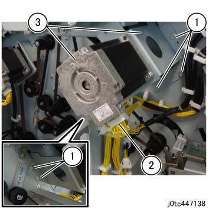
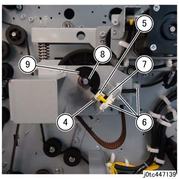
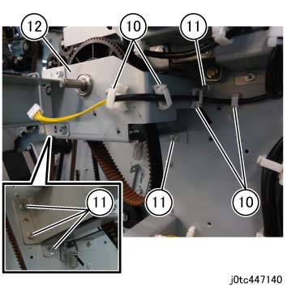
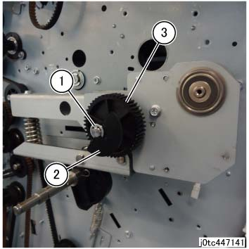
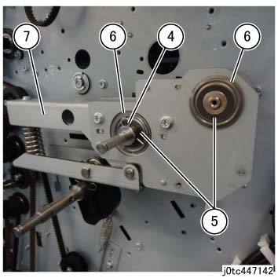
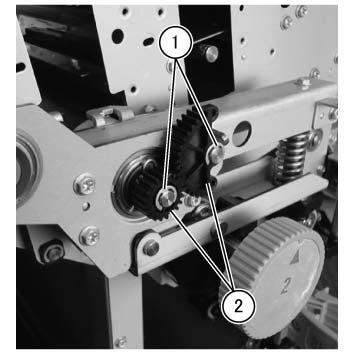
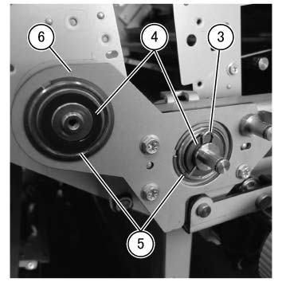
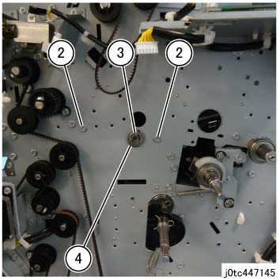
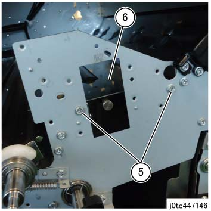

REP 47.14.7 下方 Regi. 滑槽 组件 
参考 PL:PL 47.14
Removal

执行IOT关机步骤. 确认电源已关闭并拔掉电源插头.
拆卸 上方 Regi. 滑槽 组件. (REP 47.14.4)
拆卸 折痕器 支架.
拆卸螺钉（x5）. (图 1)
拆卸 连接器. (图 1)
拆卸 折痕 电机组件 和 折痕 电机 支架. (图 1)

(图 1) tc447138
拆卸螺钉. (图 2)
拆卸 连接器. (图 2)
释放 卡箍 (x3) 和 拆卸线束. (图 2)
拆卸 折痕器 原位 位置传感器. (图 2)
拆卸 KL-卡扣. (图 2)
拆卸 执行器 位置. (图 2)

(图 2) tc447139
释放 卡箍 (x4) 和 拆卸线束. (图 3)
拆卸螺钉（x5）. (图 3)
拆卸 折痕器 支架. (图 3)

(图 3) tc447140
拆卸皮带 (折痕 电机). (PL 47.16)
拆卸 Cam Pulley. (PL 47.16)
拆卸 下方 折痕器 移动 电机组件. (PL 47.16)
拆卸 后面 摆动 支架. (PL 47.16)
拆卸 后面 Arm 组件.
拆卸E型卡环. (图 4)
拆卸 执行器 位置. (图 4)
拆卸齿轮. (图 4)

(图 4) tc447141
拆卸卡扣. (图 5)
拆卸 Nylon 垫圈 (x2). (图 5)
拆卸轴承 (x2). (图 5)
拆卸 后面 Arm 组件. (图 5)

(图 5) tc447142
拆卸 前面 摆动 支架. (PL 47.15)
拆卸 前面 Arm 组件.
拆卸E型卡环 (x2). (图 6)
拆卸齿轮 (x2). (图 6)

(图 6) tcw447038
拆卸卡扣. (图 7)
拆卸 Nylon 垫圈. (图 7)
拆卸轴承. (图 7)
拆卸 前面 Arm 组件. (图 7)

(图 7) tcw447039
拆卸 下方 Regi. 滑槽 组件.
拆卸 C 滑槽 组件. (PL 47.23)
拆卸螺钉（x2） 在后面. (图 8)
拆卸E型卡环. (图 8)
拆卸轴承. (图 8)

(图 8) tc447145
拆卸螺钉（x2） 在前面. (图 9)
拆卸 下方 Regi. 滑槽 组件. (图 9)

(图 9) tc447146